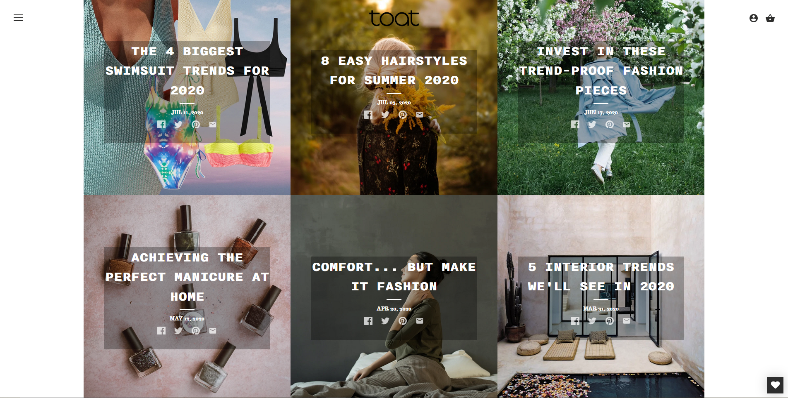
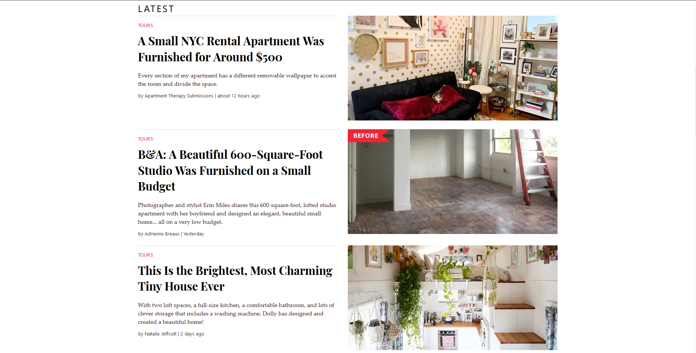

What Design Elements Can We See in Successful Blogs?
By Julia Ma
For this blog post, I researched how other blogs have been using design to visually communicate their content. I will be discussing the elements that make them successful and aesthetically pleasing.
I focused on 3 blogs that I thought would be interesting to see: i am a food blog, Apartment Therapy, and Toat.
Findings
Having a clean design is important. A clean design can help readers really focus on the blog without any design distractions. With that said, it's important for the design to also match the content being provided. I'll take Toat for an example.
I found it very interesting how the page resembled an Instagram feed. It felt very fitting since Instagram is a popular way that people basically put up super short versions of a blog to tell their followers about their OOTD's, fashion favorites, and so on. This webpage layout is followed throughout the blog from the beauty page to the travel page. similar to as to if you wanted to see a post on Instagram under a profile, you can just click on one of the many squares.
Color choice can make an huge impact in the overall enviornment. I would never think choose a plain black color for the background of a blog for food. However, i am a food blog made it actually kind of cool. The black background helps nicely frame the images which were mostly in light colored background thus also making the site clean.

White text against the back background also to seemed to pop more than the usual black on white combo. The thing I really loved was how the consistent dark theme allowed the colors of food to pop. The vibrant colors from the food make them attractive and can sort of motivate the reader to bust out their cooking skills.
A successful blog has to be easy for the eye especially when there's a lot of content. I think one of the best ways for a blog to look easy to read through is giving enought space between everything. I saw a good use of space on the Apartment Therapy blog. Apartment Therapy has accumulated many articles of apartment and house tours making their website packed with infomation although it doesn't look like it thanks the right uses of space.
Like in the screenshot above, the space given to both the text section and the display image section makes the articles from approchable and easier to navigate through. Further in the site, I also found that the layout choice was a grid format but there was generous space between each article availiable.